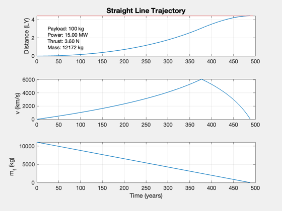
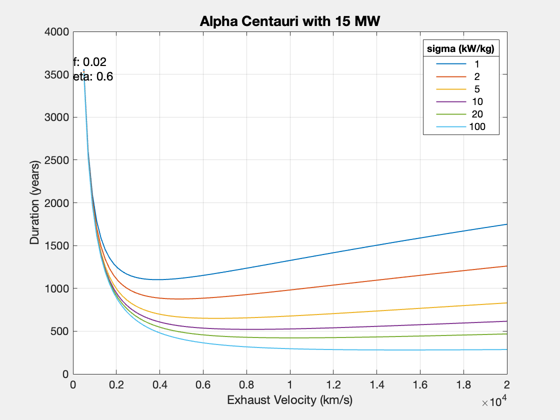

Contents
Straight-line rendezvous to Alpha Centauri
Evaluate different values for the exhaust velocity and specific power for a mission to Alpha Centauri. Uses a very optimistic (low) structural fraction. Delivers a fixed payload of 100 kg.
Things to try: * Try specific powers up to 400 kW/kg * Try exhaust velocity up to 25,000 km/s, the limit for fusion products
%-------------------------------------------------------------------------- % See also: ComputeDuration, EngineReport, SimulateStraightLineTrajectory, % Straight2DStructure, Plot2D %-------------------------------------------------------------------------- %-------------------------------------------------------------------------- % Copyright (c) 2017 Princeton Satellite Systems, Inc. % All rights reserved. %-------------------------------------------------------------------------- % Constants LIGHT_YEAR = 9.5e12; % km YEAR = 365*86400;
Solve for mission duration
How many years would it take to rendezvous with Alpha Centauri with near-term parameters? Answer: more than 1,000!
d = Straight2DStructure; % Mission parameters d.mP = 100; % kg d.f = 0.02; d.dF = 4.4*LIGHT_YEAR; d.tF = 500*YEAR; % Engine parameters d.sigma = 20*1000; % W/kg d.uE = 5000; % km/s d.eta = 0.6; % optimal exhaust velocity, per time [uEOpt,lambda] = OptimalExhaustVelocity( d ) fprintf('The optimal exhaust velocity, %g km/s, is higher than physically possible.\n',uEOpt) % Calculate starting with power power = 15e6; % W [~,thrust,data] = ComputeDuration( power, d ); SimulateStraightLineTrajectory( data ); subplot(3,1,1) text(25,2,sprintf('Payload: %d kg\nPower: %.2f MW\nThrust: %.2f N\nMass: %.0f kg',... d.mP,power*1e-6,thrust,data.m0)); EngineReport(thrust,data)
uEOpt =
14180
lambda =
0.17658
The optimal exhaust velocity, 14179.8 km/s, is higher than physically possible.
Report:
---- INPUTS ---- -- --
Payload 100 kg
Desired distance 4.42 LY
Travel time 488.51 years
---- ENGINE ---- -- --
Thrust Efficiency 0.60
Exhaust velocity 5000 km/s
Specific Power 20.00 kW/kg
Fuel Tank Fraction 0.02
---- OUTPUTS ---- -- --
Payload Mass Fraction 0.01 mP/m0
Payload Power Fraction 150.00 kW/kg
Delta-V 12147.92 km/s
---- PAYLOAD DEPENDENT ---- -- --
Thrust 3.60 N
Power 15.00 MW
Total Mass 12171.56 kg
Mass Dry 1071.99 kg
Mass Engine 750.00 kg
Mass Fuel 11099.57 kg
Flow Rate 0.00 g/s
 Explore the impact of specific power and uE
uE = linspace(500,20000); % km/s sigma = [1 2 5 10 20 100]; m0 = []; tau = []; for j = 1:length(sigma) d.sigma = sigma(j)*1e3; for k = 1:length(uE) d.uE = uE(k); [tau(j,k),thrust] = ComputeDuration( power, d ); d.tF = tau(j,k); [~,data] = EngineReport(thrust,d); m0(j,k) = data.m0; end end Plot2D(uE,tau/YEAR,'Exhaust Velocity (km/s)','Duration (years)',... sprintf('Alpha Centauri with %g MW',power*1e-6)) ll = legend(num2str(sigma')); ll.Title.String = 'sigma (kW/kg)'; text(0,max(tau(:)/YEAR),sprintf('f: %g\neta: %g',d.f,d.eta),'fontsize',12) d.uE = 1e4; d.sigma = 20*1e3; tau = ComputeDuration( power, d ); d.tF = tau; [~,data] = EngineReport(thrust,d, true); %-------------------------------------- % $Id: 72b868f67a775c7c4a966051696a38a4c5b076fb $
Warning: EngineReport: Distance not achieved!
Report:
---- INPUTS ---- -- --
Payload 100 kg
Desired distance 4.42 LY
Travel time 421.86 years
---- ENGINE ---- -- --
Thrust Efficiency 0.60
Exhaust velocity 10000 km/s
Specific Power 20.00 kW/kg
Fuel Tank Fraction 0.02
---- OUTPUTS ---- -- --
Payload Mass Fraction 0.03 mP/m0
Payload Power Fraction 150.00 kW/kg
Delta-V 12998.38 km/s
---- PAYLOAD DEPENDENT ---- -- --
Thrust 0.90 N
Distance target 4.42 LY
Distance achieved 4.18 LY
Power 7.50 MW
Total Mass 3294.22 kg
Mass Dry 498.96 kg
Mass Engine 375.00 kg
Mass Fuel 1198.15 kg
Flow Rate 0.00 g/s
